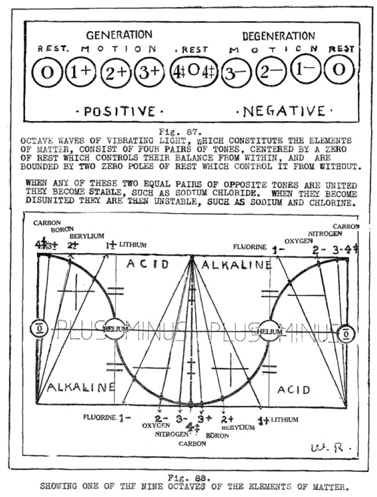
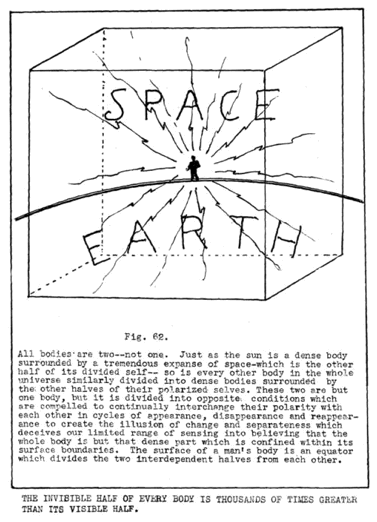
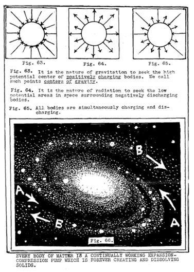
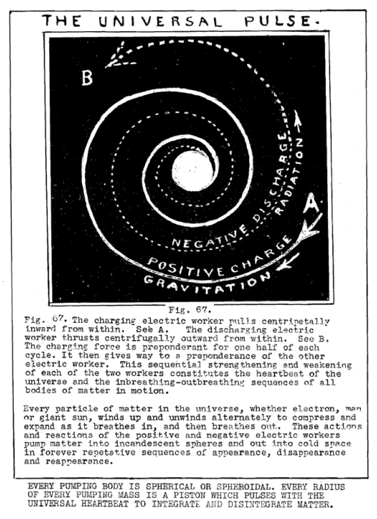

LESSON NUMBER 41 PRELUDE¶
The goal of man is Cosmic Conscious Self-awareness–which is God-awareness.
The mass of mankind is still barbaric. He is still body-sensed-body which lives and dies. He is slave to life then to death–for life and death are real to him. Man must forever be “transformed by the renewing of his Mind” until Mind transcends body instead of body transcending Mind.
The very few transcendent ones among men who are far in their unfolding and have become strong with God-awareness they alone are free. These have risen above their sensing. These have conquered both life and death through their knowing.
The life-death journey from body sensing to Mind knowing is a long-long journey of countless millions of seeming repetitions. He who has begun to know that these seeming life-death sequences are not repetitions–or reincarnations and are but one eternally long and continuous unfolding of one eternal idea from one point in the eternal Light of Mind has gone far toward his Cosmic Conscious goal.
He who can withdraw from the extensions of his sensing into the fulcrum of his knowing from which those extensions spring–and extend and retract them under full control of his will–becomes co-Creator with The Universal One. He is the transcendent being who has become the fulcrum of his own power.
You who are reading these lines with intense interest would not have read ten pages of these many hundreds if you were not one of those few of the human race who have far transcended the early stages of physical man.
It is to you that this Light of new knowledge is directed in order that you may see and comprehend this universe of matter in motion for what it is instead of being deceived by its illusions, that these descriptions of God’s ways, and God’s processes are directed.
When you fully understand that what we call matter and motion are but electric thought recordings of ALL Mind-thinking–YOUR thinking as well as God’s thinking–your power to CONTROL matter and motion AS ITS CREATOR instead of AS ITS SLAVE , will multiply in the measure of your comprehension of the electric wave which records all thinking.
We have taken the essential first steps which were necessary to bring you to the stage where you could comprehend the wave which “manufactures” spheres of matter in cubic wave-fields.
We have described the effect of desire to GIVE as an outward extension (or explosion) and to REGIVE as an inner one.
We have stated that every action of giving is simultaneously balanced by an equal regiving, and that each action-reaction is repeated in reverse, See Figures 74 to 84 on Pages 660 to 665.
Reincarnation is impossible to comprehend without understanding this simultaneity of action and reaction, followed sequentially by the reverse of that action and reaction.
Re-read and study the law of conservation as newly written at bottom of page 183. Then saturate yourself with the majestic idea that what you are now doing with your positive body is simultaneously being recorded in pattern in your negative body. For one full week make this idea a part of your thinking by meditating upon it and thinking out hundreds of examples of its workings until you KNOW it in your Soul.
When you fully realize that YOU are continually recording YOURSELF eternally, and that the visible half of you eternally interchanges with the invisible half, and that you build both of them together eternally for eternal interchange, you will then know that there is naught but LIFE in this unfolding-refolding universe, and that DEATH is the other balanced half of LIFE.
Just as it is impossible to polarize one end of a bar magnet without polarizing the other end simultaneously it is likewise impossible to perform any action with your physical body without recording that action simultaneously in your invisible counterpart. Also that which you record in the invisible part of you is as certain to become a visible body of you again, as that the pendulum which is now swinging to the right will reverse itself and swing the other way.
Do you not see that you are thus recording memories of experiences over thousands of lives which accumulate for repetition and addition forever. Every cell of your body remembers these experiences and desires to repeat them. It cannot evade repeating them. They are permanently recorded in the wave as patterned forms which are permanently kept in the recording system of God’s universe. We will tell you in the next unit of the inert gases which are the seed of all forms, and of all states of motion which ever have been. We will tell you about them in the next unit.
The musician remembers his music. His desire for musical expression is registered in his negative body as he manifests it physically, in his positive body. His love for music will begin to demand expression and he will undoubtedly continue from where he left off before, just as an apple again appears on a limb, as it did last year.
The beaver builds his dam because he remembers how he built it over thousands upon thousands of continued repetitions.
EVERY THOUGHT AND ACTION ARE PERMANENTLY RECORDED¶
As every form unfolds from its seed it is simultaneously being refolded into its seed. The positive cannot unfold into form without the pattern which is projected through the negative.
We have explained that this is a radial universe because extensions of desire from points of desire in space can result only in a radial universe–and that the retractions of regivings toward those same centers compels it to become a two-way reciprocating universe, in which gravitation and radiation interchange to compress spheres of light from dark space and to dissolve them again for reforming.
You will recall that this is God’s method of dividing the darkness from the light to manifest the concentration and decentration pulsations of His electric thinking.
Thus the polarized universe of pairs of opposite conditions of every creating effect comes into being in wave-fields which constitute the heart-beat of this electric thought-wave universe.
It now becomes necessary to climax all that has before been written by describing how the invisible cubes of space and their planes of zero curvature come into being to bound wave-fields and insulate them from each other. Within each cube wave-field of zero curvature is a curved universe–a curved radial universe of motion. Curvature ceases where motion ceases at every cube plane of zero curvature. All motion comes to rest at every plane of zero curvature to reverse its polarity and its direction of motion.
All motion is curved and all curvature is spiral. These are the things you must know to complete your comprehension of God’s methods of body building, which are also your methods.
Also you must know the cause of spiral curvature and the principles which control the motions of planets in their orbits.
And you must know of the mirrors and lenses of Light which God makes use of to construct His wave-field universe of divided light–and the gyroscopic principle which creates a dynamic universe of spheres which revolve and rotate until their equators are 90 degrees to their wave axes, and their poles of rotation, are parallel to them.
When you are fully aware of the workings of God’s electric thinking processes, and of the eight “forward and reverse gears” which constitute every octave wave in every effect of motion, you will then find the answer to all things within yourself.
When you have arrived at this point you will no longer have to reason things out–or experiment–or “go into research” to fathom the causes of universal effects which you wish to produce by going into a business or inventing a machine.
When you have thus arrived you will “know all things”. All-knowledge is already yours. You will not need to learn, for you will already KNOW. The answer to any problem or the effect of any decision of yours should be within your comprehension before you start to do anything. That is what we mean by Mind-knowing instead of body-sensing.
Cosmic Consciousness MEANS all-knowing or Mind-knowing.
Desire for Cosmic-knowing will illumine you with Cosmic-knowing, gradually, but that great desire, aided by great comprehension of God’s ways, will hasten the dawning of Cosmic-knowing within you.
One reason WHY it will hasten the coming of that supremacy is because the more you comprehend God’s ways the more you will meditate upon them. The glory of that full comprehension will open the door to the greatest of all the pleasures of man–the pleasure of ecstatic thinking which constitutes the life of the genius or mystic.
The geniuses and mystics of the world are few–but their works alone, of all man’s creations, endure forever. All we have of culture comes from those few who work knowingly with God. The works of the many are forgotten tomorrow, along with their very names.
The few must be many. The human race cannot survive unless more Cosmic Conscious men arise from the ashes of this dying race.
We say to you therefore, that you must give the effort needed to gain that supremacy. It cannot come without effort upon your part–supreme and indefatigable effort.
When you see a great genius sway a mighty audience and inspire in it the great rhythms of his thinking, you KNOW that he could not have acquired that supremacy of power through desire alone unaccompanied by mighty effort. Desire to express musical rhythms was life itself to him. To be without it would mean torture too great to bear. He, therefore spared no effort to gain his supremacy of comprehension, and to acquire mastery over the medium through which he had to express it.
We, likewise, say to you that the measure of your own exaltation can never be achieved through desire alone. DESIRE MUST BE ACCOMPANIED BY ACTION–the action of EFFORT to comprehend.
Each effort of concentration, followed by decentration, makes comprehension more easy of attainment until there comes a time when flashes of comprehension come without effort. When that time comes know then that you are close to God. You are walking and talking with God. You will then be able to vision the ends of your undertakings before you have started their beginnings, and that is as it should be.
Seek that high level by much effort and much aloneness with God.
WE FURTHER CONSIDER THE RELATION OF THE CUBE TO THE OCTAVE WAVE¶
We must now open doors to heretofore unknown, and even unsuspected mysteries. We will begin by asking ourselves the following questions–for which science has never had an answer –and give the answer fully, in both word and diagram.
WHAT–and WHY–is motion; and how does it come into being?
Why is it that the octave-waves of the elements of matter, or of the color spectrum octave-waves of light, consist of eight vibrating tones of wave motion which are enclosed within three zeros of rest where motion ceases? This formula is universal in all octave-waves. The octaves of the elements and spectrum have been considered to be seven in number. That is because it has never been known that the number 4 is a pair, united as one. The octave -wave consists of four balanced, but opposed pairs, three pairs being extended from a common equator, as well as each one of each divided pair having its own equator, the fourth pair being united as one body, divided by only one equator instead of three.
Herein follows the universal formula of rest and motion upon which our entire sciences of chemistry, metallurgy, and kindred sciences are founded: See Figure 87. Also one of the nine octaves of the elements of matter is diagramed below it. See Figure 88.
Why is it that all motion is centered from within by a zero of rest and controlled from without by two other rest zeros? We cite the earth’s center of gravity and its two magnetic poles as an example which has no exception in any particle of matter, whether electron, atom, organic cell, planet or sun,
We cite also the fulcrum and the lever, See Figures 89, 90, 91 and 92.

Archival Plate (image065.gif)¶

Archival Plate (image066.gif)¶

Archival Plate (image067.gif)¶

Archival Plate (image068.gif)¶
In this connection you will recall the quotation from God’s Message of The Divine Iliad which says: “For behold I am within all things, centering them, and I am without all things, controlling them”.
Why is it that every effect of motion starts at zero, seeks a point of zero to rest, and returns to zero to again rest before it can repeat its action-reaction? This is equally true of every action-reaction, great and small, whether it be the action-reaction pulsation of breathing–of throwing a ball in the air–of moving one finger–or of a dynamite explosion.
Why is it that no one has yet observed or recorded the fact that action and reaction are simultaneously recorded and sequentially repeated in reverse? This is a fundamental principle of Natural Law, yet up to this day the sequential repetition is all that is accounted for in the law of conservation of energy, and even the fact of reversal is omitted from that law. See Figures 90 to 94.
Any action whatsoever divides an equilibrium into the two opposite conditions simultaneously, Compression piles up in the direction of motion and expansion takes place behind it.
Witness, for example, the motion of an airplane which curves the pressure of compression ahead of it and the opposite evacuating pressure behind it. An equator is set up between the two which is exactly analagous to the equator of a bar magnet.
Likewise, the electric current of the airplane’s motion has polarized space exactly as the electric current has polarized the steel bar magnet of the laboratory.
Witness also the black vacuous hole which centers any explosion. Whatever pressure is thrust outward by the explosion is borrowed from its center. Polarity has taken place because of motion only. Likewise, space has become “curved” into waves for the same reason. Also two conditions have been established which are the reverse of each other, the two being divided by an equator.
Now comes the greatest of all the unanswered questions:
When the clergyman pronounces two separate and disunited people of opposite sex to be man and wife, then says to them, “Ye twain are now ONE” is there any scientific explanation for that declaration that two become one, or is that just a sentimental tradition.
In other words, is there any electrical, chemical or spiritual change which takes place when two people of opposite sex “BECOME ONE”?
All of these six questions, as well as all other questions concerning any effect of motion whatsoever, are answerable by you or by us to the extent that each one knows the octave wave, the cube-sphere which constitutes the wave, and the principles of balance which determine all effects in both extended divisions of the wave.
THEREFORE KNOW THE WAVE. The measure of your knowledge of the wave is the measure of your power to achieve, just as the measure of your God-awareness is the measure of divine desire to make use of that power.
We have heretofore said that he who becomes transcendent through KNOWLEDGE of how to express his DESIRE lives a transcendent life. Such a one lives a more ecstatic, more masterful mental existence, makes fewer mistakes and does not experiment. Neither does he rely upon others for advice or influence.
That is what we mean by living a transcendent life. It means that your own divine KNOWING within you makes you the master of all physical effect, and you do not need to go to others for knowledge which is within yourself, nor do you need to experiment in any of the ways of life when the LAW which governs that experiment is yours.
For your comfort we will remind you that it is not always easy, even for the most transcendent genius or mystic to continually live his divine life. The human element is strong. It pulls and tugs at the mentality of the greatest among men, for all who must manifest in the body must combat and satisfy the natural urges of the body.
The greatest genius in the world hungers, and when he must prepare and eat food for his body he is called back to a remembrance of his body from an absolute forgetfulness of it which he experiences when interpreting the divine rhythms of the high heavens.
Remember this, therefore, for the human element in the greatest among men will cause him to stumble, to make mistakes and to experiment when he need but turn about and seek his own divinity to again become master and live in the ecstasy of his own transcendency.
WE BRIEFLY COMMENT ON QUESTION NUMBER SIX¶
You cannot find a better example of what benefit scientific knowledge can be to you than in the answer to the question as to WHY two disunited people are different when they become united in a true marriage between true mates, for the rule does not apply when two people who are not true mates “just marry”.
Two unmated humans are like two unmated chemical units of one pair, such as sodium and chlorine, lithium and fluorine or potassium and bromine. Study these separate units of pairs in Figure 94. Then review and restudy 75, 76, and 77 on Page 661. Then study the system of the equators of the elements in Figure 84 on Page 665, and of Figures 88 and 94 of this lesson.
The important fact to note is that each equator of each pair is in exact opposition to its mate. Each is the reverse of the other. Also each is an extension from a common fulcrum which is a common equator for each pair.
Now note another important fact. Each one of each pair is divided by its own equator. This means that every disunited pair of units in all Nature is controlled by three equators, centered, in each unit, by a point of rest which becomes a fulcrum for each unit of each pair.
If you will now carefully restudy Figures 78 to 83 on Page 664, you will see the separated pair in Figure 80 beginning to seek unity just as two human lovers reach out their desires for each other.
Just so long as each of these two remain disunited they each have a center of gravity within themselves and each has its own equator. The moment two centers of gravity become one with their fulcrum which centers their commonly shared equator, as you may plainly see in Figure 81, the three equators become one, and the two centers of gravity which become one by withdrawing into their own fulcrum.
Such a union transforms the two. The alkaline and acid quality utterly leave the united pairs which are shown in Figure 94. Also their metallic quality has left them.
Another distinguishing feature is the transformation which takes place in their crystallization. No matter what system any polarized separated pair crystallize in when dependent upon three equators and two centers of gravity they all crystallize as true cubes when united as balanced pairs with but one center of gravity.
Examine the crystals of sodium chloride, which is common table salt, and you will see these true cube forms without need of a magnifying glass.
The true cube crystal occurs only in the united pairs, those which have but one equator between them, and one center of gravity, such as carbon, silicon, lithium fluoride; sodium chloride and potassium bromide.
The centering suns of all such systems are also true spheres, and each of these systems revolve spirally, in one plane, like a disc, See Figure 13 on Page 166, Figure 66 on Page 491 and Figures 57, 58 and 59 on Pages 446 and 447.
All separated pairs, such as lithium and chlorine, or any of the many you see in Figure 94, crystallize in other systems which are cube sections, See Figure 69 on Page 521.
You may now be wondering why that would make different people out of two humans, and if so what is that difference? Does it add to their power or ability? In what measure are they transformed as human beings?
In the answer to this lies the knowledge of the great import of true mating.
When we say true mating, we mean matings between equal opposites of a pair, for mismatings of humans can be as explosive and destructive as mismatings in the chemical elements.
True matings are rare, exceedingly rare, but in true matings the two united ones are no longer the same individuals, working independently from the fulcrums of themselves. They are no longer THEMSELVES. They are truly ONE SELF, with but one fulcrum, one equator and one center of gravity–or balance–both meaning the same thing.
Together they can accomplish more than they could as separate beings. Together, in such unity, they multiply all the power of one by the other one and bestow the total upon each, acting as one. This is Nature’s meaning to true mating.
To better understand this change let us observe its chemical effect upon marriages taking place between the elements of matter.
Figure 94 illustrates this question quite simply. In it we have printed five of the nine wave octaves of matter, the five which are within working range, and the range of physical perception of the scientist of today. On the positive side of the wave you will note part of the final octave which disappears into radioactive oblivion through Radium–(Rd, ) Actinium–(Ac.) Thorium–(Th.) Uranium X etc. into the invisible.
The letters in the little circles are the symbols of the elements. We have projected three of these pairs of symbols and translated them into their familiar names for your better comprehension.
The three pairs of opposites which we have projected are all in the 1 positive and 1 negative series. Let us consider them. Fluorine, chlorine and bromine are acid metals. They belong to the mother principle of Nature which unfolds outwardly from within. Their polarity is negative.
Lithium, sodium and potassium are alkaline metals. They belong to the father principle of Nature which refolds inwardly from without.
Each of these separate units of each pair have certain chemical and electrical effects in combination with other elements. Each does certain predictable things with no exception.
The moment, however, that either “twain become one” in marriage, they multiply their balance by eliminating two of the three equators of balance which controlled them in their separate states.
Fluorine and lithium have no longer any of their metallic qualities when they unite as lithium fluoride. Like carbon they crystallize in true cubes and the suns of their systems are true spheres. They have become like carbon, a stony mineral which chemists call a salt when any acid and alkali pair unite. Likewise, there is, not a trace of either fluorine or lithium in lithium fluoride.
The same is true of sodium chloride and potassium bromide. Also the reverse is true if either of these pairs are again divided. Each one of each pair reverts to its metallic condition the moment it is extended from its fulcrum.
Carbon, for example, is a united pair of opposed metals. Its melting point is so high that it is difficult to extend into a divided pair, but if it were done we could have a new series of rustless metals of high conductivity which would be of extreme value to industry.
When you pass some clay bank, or mass of felspar, bauxite or other non metallic minerals, it does not occur to you that your aluminum airplanes and cooking utensils are made of such materials–yet they are. And so, also is the iron and steel of commerce taken out of the red earth of the hills. Silicon, granite and all of the rocky substances of earth are united pairs–married pairs–two becoming one to give stability to the planet.
Metals are all extensions from a common fulcrum. If man “divorces” any stable, united, balanced pairs to procure metals from them Nature will eventually marry them again. The metals will rust away in time and that which was at one time strong steel will again become the red earth of the hillside from which it was extended by man.
Marriage between true mates means stability and balance of ONENESS coming to two unstable and unbalanced conditions.
Pairs of humans thus united as one do not become one only through the attainment of electric balance, they become one CONSCIOUSLY, and SPIRITUALLY. Two who have become thus united have multiplied themselves incalculably.
The greatest gift of God to man is the gift of balanced mating.
True matings are predictable in the elements. In Figure 94 the true matings are designated by connecting lines. If any one of the three pairs of true (balanced) matings used as illustrations should “marry” any one of any other of the three pairs, they would “get along together” quite harmoniously unless the true mate of either should appear. In the chemical elements a divorce would then take place immediately without any preliminaries whatsoever.
Why is this? If you examined the crystals of any of such unbalanced mismatings as sodium and bromine, for example, or of potassium and chlorine, you would find that their crystals are not true cubes. Such married pairs would crystallize in the cubic system but the cubes would be distorted and complexed by other faces than those six perfectly balanced ones which belong to the cube.
This means that with any mismatings there is always a residue of unbalance–always something which has been unsatisfied. This is as true chemically as it is with humans. When humans marry close mates, even if not true mates, they should endeavor to find a common balance between the two and make the best of it for true matings among humans are rare.
With the knowledge herein set down one may be enabled to use better judgment in the choosing of a mate by letting his heart influence his decision rather than any one of the many motives people have for choosing mates.
The more you can find in a mate which is like yourself the more each of you will find balance in each other, for the saying that one should seek his opposite in mating is not true to Natural law. In Nature like seels like everywhere–NOT opposites.